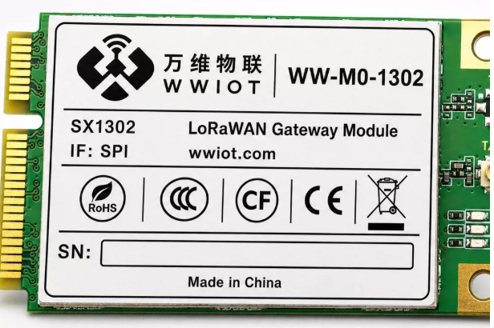

WW-M0-1302 LoRaWAN 网关模组
基于 Semtech SX1302 的多信道 LoRaWAN 网关射频模组，采用 Mini PCIe 封装与 SPI 主机接口，适用于集成式 LoRaWAN 网关设备。
1产品概述
WW-M0-1302 是一款基于 SX1302 芯片方案设计的 LoRaWAN 网关模组，采用标准 Mini PCIe 形态封装，主机侧使用 SPI 接口，模组内置 PA 和 LNA，采用半双工设计，方便用户快速开发 LoRaWAN 网关设备。
SX1302 是 Semtech 新一代 LoRa 网关基带芯片，搭载 SX1250 前端，可支持扩频因子 SF5~SF12。相比上一代 SX1301 网关方案，具备更高的数据通信速率、更低的功耗和更简化的热设计。
2产品特性与主要参数
| 项目 | 规格 |
|---|---|
| 产品型号 | WW-M0-1302 |
| 核心芯片 | Semtech SX1302 LoRa 网关基带芯片 |
| 主机接口 | SPI |
| 封装 | 标准 PCI Express Mini Card 1.2 / Mini PCIe 形态 |
| 工作方式 | 半双工 |
| 射频前端 | 内置 PA 和 LNA，搭载 SX1250 前端 |
| 接收能力 | 8 路接收，SF5~SF12 全解 |
| 最大发射功率 | 最高 26 dBm（505.5MHz 典型资料） |
| 典型接收灵敏度 | 低至 -141 dBm（505.5MHz，SF12，BW=125kHz） |
| 供电 | 3.3V DC，输入范围约 3.0~3.6V；供电能力至少 500mA |
| 天线接口 | I-PEX 1 代接口 |
| 适用频段 | EU433、CN470、EU868、US915 等免授权频段；实际频段以版本和当地法规为准 |
2.1 典型工作电流
| 模式 | 工作条件 | 典型值 |
|---|---|---|
| RX | 开启接收，禁用 TX | 54mA |
| TX/RX | 开启接收，开启 TX（25dBm） | 360mA |
| IDLE | 空闲不工作模式 | 27mA |
3结构与产品展示

WW-M0-1302 模组主图
主图标签显示：WW-M0-1302、SX1302、LoRaWAN Gateway Module、IF: SPI、wwiot.com，并带有 RoHS、CCC、CF、CE、WEEE 等标识。
该模组采用标准 Mini PCIe 金手指形态，适合插入符合 PCI Express Mini Card 连接器规范的主控底板。
4接口定义
4.1 主要功能管脚
| 名称 | 管脚号 | 属性 | 功能描述 |
|---|---|---|---|
| GND | 4,9,15,18,21,26,27,29,34,35,37,40,43,50 | — | 地 |
| 3.3V | 2,24,39,41,52 | PI | 3.3V DC 主电源输入 |
| PPS | 19 | DI | GPS 授时输入，可悬空 |
| NRESET | 22 | DI | 复位控制管脚，高电平复位 |
| RX_ON | 42 | DO | 接 SX1302_GPIO[3] |
| TX_ON | 44 | DO | 接 SX1302_GPIO[5] |
| CFG_ON | 46 | DO | 接 SX1302_GPIO[4] |
| SX_SCK | 45 | DI | SPI 时钟信号输入 |
| SX_MISO | 47 | DO | SPI 数据输出 |
| SX_MOSI | 49 | DI | SPI 数据输入 |
| SX_CSN | 51 | DI | SPI 片选信号输入 |
4.2 未使用与预留管脚
UIM、PCIe 高速差分、USB 等管脚在该模组版本中未使用或为内部保留，按原资料要求保持悬空或不连接，不应作为外部业务接口使用。
5电源与 SPI 接口
5.1 电源
WW-M0-1302 使用 3.3V 供电，输入电压建议保持在 3.3V±9% 范围内。TX 模式瞬间峰值电流可达约 400mA，开关电源或 LDO 应具备足够供流能力，模组供电端建议增加容量较大的钽电容或电解电容。
若使用开关电源，应尽量使电源走线避开天线区域，降低 EMC 干扰。
5.2 SPI 接口
| 名称 | 管脚号 | I/O | 功能 | 电压域 |
|---|---|---|---|---|
| SX_SCK | 45 | DI | SPI 时钟信号输入 | 3.3V |
| SX_MISO | 47 | DO | SPI 数据输出 | 3.3V |
| SX_MOSI | 49 | DI | SPI 数据输入 | 3.3V |
| SX_CSN | 51 | DI | SPI 片选信号输入 | 3.3V |
主控 SPI 需要支持全双工，具体时序请结合 SX1302 数据手册设计。
6控制信号与天线
| 信号 | 说明 |
|---|---|
| PPS | 支持 GPS-PPS 输入，用于接收带有时间戳的数据包 |
| NRESET | 将接口电平拉低 0.05~0.2s 后释放，可复位模组；走线应尽量短并做好包地 |
| RX_ON | 开启接收状态时输出高电平，同时板载 LED 点亮，连接 SX1302 GPIO[3] |
| TX_ON | 发送数据时输出高电平，同时板载 LED 点亮，连接 SX1302 GPIO[5] |
| CFG_ON | 成功配置参数时输出高电平，同时板载 LED 点亮，连接 SX1302 GPIO[4] |
天线接口
模组天线连接座采用 I-PEX 1 代接口，射频走线应远离电源开关节点、高速数字线与高噪声器件，并按目标频段匹配天线与阻抗。
7电气与射频性能
7.1 IO 电气特性
| 参数 | 描述 | 最小值 | 最大值 | 单位 |
|---|---|---|---|---|
| VIH | 输入高电平电压 | 0.7×VCC | VCC+0.3 | V |
| VIL | 输入低电平电压 | -0.3 | 0.3×VCC | V |
| VOH | 输出高电平电压 | VCC-0.5 | VCC | V |
| VOL | 输出低电平电压 | 0 | 0.4 | V |
7.2 发射功率与接收灵敏度
| 工作频段 | 最大功率 | 备注 |
|---|---|---|
| 505.5MHz | 26dBm | 资料给出典型值 |
| 868.5MHz | TBD | 需以具体版本实测 |
| 915.5MHz | TBD | 需以具体版本实测 |
| 工作频段 | SF | 典型接收灵敏度 |
|---|---|---|
| 505.5MHz，BW=125kHz | SF5 | -121dBm |
| 505.5MHz，BW=125kHz | SF7 | -127dBm |
| 505.5MHz，BW=125kHz | SF12 | -141dBm |
| 868.5MHz / 915.5MHz | SF5~SF12 | TBD，需以具体版本实测 |
8集成设计注意事项
- 主控 SPI 必须支持全双工，具体时序以 SX1302 数据手册为准。
- 3.3V 供电需满足瞬时峰值电流；TX 时应重点检查电源压降与纹波。
- 电源输入端增加储能电容，电源走线避开天线与高噪声区域。
- NRESET 走线短、包地处理，避免外部干扰造成误复位。
- 未使用的 UIM、PCIe 高速差分、USB 与 RESERVED 管脚按资料保持悬空或不连接。
- 频段、发射功率、天线与认证应根据目标市场和当地无线法规最终确认。
- 图片显示的认证标识包括 RoHS、CCC、CF、CE、WEEE；正式量产资料应以实际认证文件为准。
技术支持：万维物联网（南京）有限公司。联系技术支持时，请提供模组型号、主控平台、目标频段、电源条件与 SPI 接口时序。